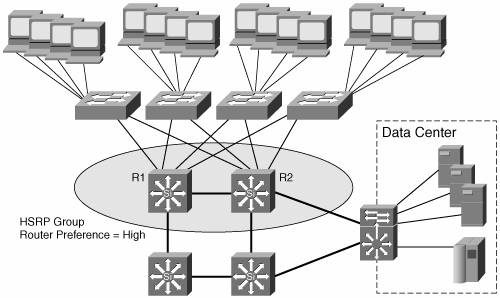
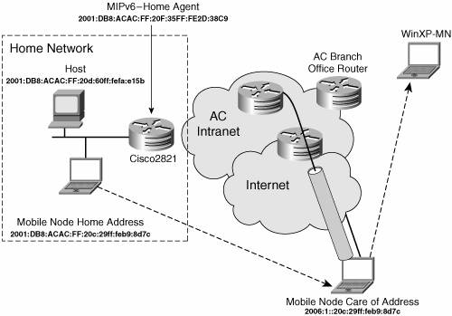

Design and SetupLessons learned during the trial period were positive enough to get the management approval for an IPv6 integration project. As with any networking project, there are several steps to go through before advertising IPv6 as a production service. One initial step is to develop a design of the IPv6 intranet and issue AC policies before the start of the rollout. This section does not indicate the amount of time required to achieve each phase. It is assumed that several months would be needed, depending on parameters such as IT department workload, cost control, and the availability of stable and affordable commercial solutions. Mandatory steps include the following:
Note Because of the large number of options when designing an enterprise or commercial intranet, this section is not an exhaustive list of actions. You should tailor these guidelines to your own environment and add any necessary additional steps. IPv6 AddressingSimilar to the IPv4 design, one of the first actions is to define an address scheme. The next section introduces the AC plans for prefix and host address assignments. Prefix-Assignment SchemeAt the time of this writing, the Registries only allocate an IPv6 prefixa ::/32 or greater address spaceto ISPs, NRNs, and government agencies, meaning an enterprise must get an IPv6 prefix (::/48) from its ISP. Part of the IPv6negotiation with T-World was the subscription of a prefix for AC; it is assigned 2001:0DB8:ACAC::/48. The remaining 16 bits' significance has to be defined. They will be partitioned based on the scheme shown in Table 15-4.
Address Configuration RulesAlthough IPv6 specifications define the support of stateful and stateless autoconfiguration mechanisms to assign an IPv6 address to a host interface, as discussed in Chapter 3, most of the host implementations only support the stateless option. This means there are only two modes of IPv6 address allocation that can be practically considered for a deployment: manual or stateless. With the prefix provided, the host needs an interface ID. There are several ways in which the interface ID can be selected. It can be manually configured, it can be derived from the MAC address following the EUI-64 rules, or it can be built using the "privacy extensions" defined in RFC 3041 (as described in Chapter 2, "An IPv6 Refresher"). Remember that an IPv6 host interface may have a set of unicast addresses in use. The following guidelines were established for selecting interface IDs in the AC IPv6 network:
Dual-Stack DeploymentThe initial trial lessons and list of identified services AC intends to run over IPv6 led the team to choose a dual-stack approach. After running a network inventory, the needs to upgrade some hardware and software releases are known by the AC IT team and adequately budgeted in association with other programs for the next fiscal year. On campus LANs, layer 3 switches will be configured to run native IPv6for instance, Catalyst 6500 series with supervisor engine 720 and native Cisco IOS 12.2(18)SXE release or Catalyst 3750 series and Cisco IOS 12.2(25)SEA release as minimum. Remote sites connected through leased lines will get their router software releases updated to support dual-stack operation. To reduce the labor costs, this upgrade will be associated with the update program to the Cisco 1800 and 2800 series. The minimum release to match AC service needs is Cisco IOS 12.4(2)T. Table 15-5 summarizes the platform/IOS mapping targeted for the deployment.
Remote sites connected via broadband access will have an IPv6-configured tunnel setup. Because IPv4 is the primary service and is already protected via the VPN tunnel between site-to-site routers to one of the main AC campuses, there is no local access security concern about adding IPv6 services. The configured tunnel allows the allocation of global IPv6 prefixes in accordance with AC rules. The addition of a global IPv6 prefix to those sites that are configured with a single static IPv4 address on the WAN link and private address on LAN ease the potential deployment of multicast and peer-to-peer applications. The IPv6 manually configured tunnels do not have to be terminated on the same device as the IPv4 IPsec VPN tunnel. When possible, they will get terminated on a Catalyst 6500 supervisor engine 720 that does support this tunnel mechanism in hardware. Routing ProtocolsTo keep the learning curve and operational process at a minimal level, similar routing protocols will be deployed for IPv6 and IPv4, meaning EIGRP for IGP and MP-BGP4 for peering with T-World (see Chapter 4, "IPv6 Routing Protocols," for details and configuration on these protocols). In the final phase of the project, the entire network is converted to dual stack. In an effort to keep the operational and management tasks as simple as possible, it is decided to align the IPv4 and IPv6 topologies for all routers and links in the network. The routing protocol parameters are configured to get all traffic flowing through similar paths. This decision is taken to ease the operational support, to avoid complex troubleshooting where communications between two nodes could work for a given IP version but not the other because different paths followed through the network. First-Hop Router RedundancyIPv6 hosts on a broadcast link learn about the presence of one or more gateways by receiving Router Advertisements (RAs) sent using the IPv6 Neighbor Discovery Protocol (see Chapter 2). The Router Advertisements are periodically sent via multicast at a rate high enough to ensure that hosts learn about the routers in the span of a few minutes, which therefore removes the need to set a "default gateway" (as in the case of IPv4). The selection of a given router depends on the host IPv6 stack implementation. On the other hand, by default, RAs are not sent frequently enough to rely on the absence of the router advertisement to detect router failures. Therefore, there is a need for tuning the ND process and leveraging additional protocols to improve the availability of first-hop routers:
Note IETF Mobile IPv6 specification (RFC 3775) reduces the minimum RA interval significantly. Tuning Neighbor DiscoveryNeighbor Discovery (Chapter 2) includes a mechanism called Neighbor Unreachability Detection (NUD), which is used to detect the failure of a neighbor node (router or host) or the forwarding path to a neighbor. This is done by sending Neighbor Solicitation messages to the neighbor node. To reduce the overhead of sending Neighbor Solicitations, the messages are only sent to neighbors to whom the node is actively sending traffic and only after there has been no positive indication that the router is up for a period of time. Using the default parameteripv6 nd reachable-timeit will take a host about 30 seconds to learn that a router is unreachable before it will switch to another router. This delay would be noticeable to users and can cause some transport protocol implementations to time out. In the absence of any other first-hop router redundancy protocol, such as Cisco HSRP, tuning of NUD is a useful alternative. Setting of the ipv6 nd reachable-time parameter to a more aggressive value allows the speedup of the switchover time, but it has the downside of significantly increasing the overhead of ND traffic. This would be specially noticeable when there are hundreds of hosts on a link (because they all would try to determine the reachability of their gateways). A good tradeoff between potential ND bursts and switchover times seems to be 15 seconds versus the 30-second default value. Example 15-12 shows how to configure the ND Reachable timer on a router's interface. Example 15-12. ND Reachable Timer Configuration
On an AC network, this will only be configured when Cisco HSRP for IPv6 or other first-hop redundancy mechanisms are not available on layer 3 switches or routers; otherwise, default value are kept. Configuring Default Router SelectionBecause IPv6 ND did not initially specify a way to set a default router, IPv6 hosts learn about all routers available on a LAN through the ND RA mechanism. It is the responsibility of the hosts to maintain a default router list from which one is selected for forwarding traffic to off-link destinations. The selection for a destination is then cached, and the implementation of selecting gateways can be round robin or "always the same." This is simple and works well in most cases, but in some situations, it is suboptimal:
Both are backward compatible with the existing RA mechanism and host behavior. DRP can be implemented without implementing MSR. Note At the time of this writing, Cisco IOS software only implements the DRP function. On the host side, the feature is also supported on Microsoft Windows XP and .NET Server 2003. By default, Cisco IOS routers send RAs with a preference of medium. The no version of the command returns the configuration to the default value. On AC LANs, the routers managed by the IT will be set to high to avoid basic misconfiguration in case a new router is added to a segment. Example 15-13 shows router preference set up to high on a router's interface loaded with Cisco IOS Release 12.4(2)T. Example 15-13. Router Preference Setup
Example 15-14 shows the command to check the configuration of both ND reachable timer and router preference. Example 15-14. Display of ND Reachable Timer and Router Preference Setup
Enabling Cisco HSRP for IPv6A first-hop redundancy protocol, such as Cisco HSRP, can provide a much faster switchover to an alternate router than can be obtained using standard ND procedures. Using HSRP, a backup router can take over for a failed default router in about 10 seconds using default parameters, or less than 1 second if millisecond HSRP timers are used. This is done without any interaction with the hosts, and with a minimum amount of HSRP traffic. Most IPv4 hosts have a single router IP address configured as the default gateway. When Cisco HSRP is set up, the HSRP virtual IPv4 address is configured as the hosts' default gateway rather than the router IP address. Most changes to HSRP for IPv6 are to the ND functions (Neighbor Advertisement, Router Advertisement, and ICMPv6 redirects). An HSRP IPv6 group has a virtual MAC addressblock different from the Cisco HSRP one for IPv4that is derived from the HSRP group number. A virtual IPv6 link-local address is also derived, by default, from the HSRP virtual MAC address. Note The Cisco HSRP for IPv6 virtual MAC address block0005.73A0.0000 through 0005.73A0.0FFFUDP port number 2029, has been provisionally allocated to HSRP IPv6 by the IANA. A common way to form an IPv6 link-local address is by appending an interface ID to the prefix FE80::/64. The interface ID for an HSRP group is based on the EUI-64 identifier derived from the HSRP group virtual MAC address. The EUI-64 is formed as shown in Chapter 2. For the MAC address 0005.73A0.0001, the interface ID is 00-05-73-FF-FE-A0-00-01, and the IPv6 link-local address is FE80::5:73FF:FEA0:1. Note that the U/L it is set to 0, indicating local significance. Periodic RAs are sent for the HSRP virtual IPv6 link-local address when the HSRP group is active. These RAs stop after a final RA is sent when the group leaves the active state. No restrictions occur for the interface IPv6 link-local address other than that mentioned for the RAs. Other protocols continue to receive and send packets to this address. In the case of IPv4, simple load sharing may be achieved by using two HSRP groups and configuring half the hosts with one virtual IP address and half the hosts with the other virtual IP address. In contrast, on IPv6 this happens by default. If there are two HSRP IPv6 groups on a link, the hosts learn of both through IPv6 ND RA messages. They are either multicast periodically, or solicited by hosts. Then a host chooses to use onedepending on the IPv6 stack implementationsuch that the load is shared among the advertised routers. Typically, a host may use a round-robin scheme to decide which to use from the list of learned routers. Cisco HSRP is an efficient mechanism designed to provide high availability of first-hop routers for IPv6 hosts. It is therefore decided that on AC LANs, when several routers are available on a given links for IPv6 hosts, HSRP for IPv6 will be configured as shown in Figure 15-7. Figure 15-7. High Availability on AC LANs Example 15-15 shows a configuration for routers R1 and R2 that requires a Cisco IOS Release 12.4(4)T as minimum: Example 15-15. Cisco HSRP for IPv6 Configuration
To verify the HSRP activation, the show standby command can be used, as shown in Example 15-16. Example 15-16. Display of Cisco HSRP for IPv6 Setup
Network managers may want to configure another FHRP protocol to achieve a similar behavior. On Cisco IOS implementations, alternatives are either VRRP, if interoperability with other vendors' routers is required, or Cisco GLBP, when multiple upstream paths are available to improve performance by facilitating better use of network resources. Then, additional configuration options, such as Enhanced Object Tracking, can be turned on when available for IPv6. Securing the IPv6 DeploymentAs extensively described in Chapter 9, IPv6 security is a mix of challenges, both those that are IPv4 similar and potentially new challenges. By default, IPv4 security policies will be applied to IPv6 as well on the AC intranet. The IPv6 deployment will also benefit from all the underlying security mechanisms already in place for IPv4 (for example, AC has already secured the layer 2 access of its network with the wireless infrastructure). Products currently deployed as IPv4 firewalls have to be upgraded to a software release supporting IPv6. When not possible, the upgrade of the current hardware to a new generation of firewall with IPv6 support must be planned. The IPv4 configuration of the firewalls has to be updated to block uncontrolled IPv6 over IPv4 tunnels from being set up across the AC network perimeter. Devices performing intrusion detection system (IDS) functions should also be evaluated for an immediate upgrade to IPv6 support. The IPv6-specific security guidelines outlined in Chapter 9 are also formalized and implemented by the operation team in the AC network. With regard to security challenges raised by the new services deployed over IPv6, multicast and Mobile IP have to be addressed. The most important aspects of securing the multicast service relate to multicast domain management. The control and data multicast traffic has to be contained at the boundaries and blocked from entering the network. The RPs have to also be protected against possible DDoS. For the experimental deployment of MIPv6, an extended ACL will be edited to filter on the routing header Type field, permitting type = 2 (MIPv6) and denying type = 0 (source route) as available on Cisco IOS Release 12.4(2)T. See Chapter 9 for configuration details. The Cisco 2821 router configured as an ISATAP router in the initial trial will be kept up and running, adding IPv6 connectivity to the Cisco VPN Client usersnot be confused with the VPN tunnels configured on broadband access routers located at remote sites. MulticastOn the AC intranet, IPv4 multicast is an experimental service. It started a couple of months ago to stream audio and video files from headquarters to the rest of the world for scheduled training on new AC products and services as well as internal management broadcasts. In reality, the IPv4-based service is supported only at a limited number of locations (because of its operational challenges). The service trial shows it to be too complex to manage IPv4 multicast across the NAT/PAT devices. AC expects to decrease the cost of operations for the service by running it over IPv6. The same commercial applications as in the case of IPv4 multicast are already available, so it is now a matter of network support. The first applications of the multicast service revolve around content distribution that would be well supported by a Source Specific Multicast (SSM) model. However, AC plans to roll out collaborative applications, which means the multicast sources might not always be located in the AC's data centers and with a well-known address. For this reason, AC opted for an Any Source Multicast (ASM) multicast design. To avoid the transport of delay/jitter-sensitive traffic across large distances and over expensive circuits, AC's worldwide network is segmented into three areas, which represent independent multicast domains. This approach also provides the three regions with a certain level of independence that allows them to tailor content to the respective markets. Each domain is outfitted with content servers at a headquarters location as described in Table 15-6. It was also decided not to support the multicast traffic of other applications in crossing the boundaries of these domains.
For content-distribution purposes, two streaming servers are located per data center in the San Francisco, Paris, and Hong Kong headquarters. Content is actually created in San Francisco and then distributed to the other two locations over night. Each data center is responsible to stream the multimedia content in its respective region. The service in each region will be similarly designed and will follow the guidelines and examples shown in Chapter 6, "Providing IPv6 Multicast Services." It will also rely on the existent IPv6 IGP for routing information and RPF calculation. The following protocols are used to support the multicast service:
The servers acting as sources for the multicasted content are located in the data centers of the three local headquarters serving each region. A prefix is allocated for these multicast resources in each data center, and it is identified by convention through bits 57 through 64 of the IPv6 address being set as DD:
The two gateways serving the server segment are set to be the RPs for the multicast groups used in that domain. A second prefix is used to identify these RPs. For this prefix, bits 57 through 64 are set to DF. The loopback interfaces of the RPs are assigned this prefix with the interface ID set as ::F. In the case of an embedded RP-based deployment, the multicast group addresses derive from the RP unicast address, as described in Chapter 6. Table 15-7 summarizes the prefixes relevant to the multicast service.
Example 15-17 shows the relevant configuration of the RP router in the San Francisco data center. Example 15-17. IPv6 Multicast Configuration
The two segment gateways provide a certain level of redundancy for the RP functionality. The primary RP has the loopback address configured with the longer prefix /128, whereas the backup has its configured with the same address but the /127 prefix length. This means that as long as the primary is active, the longer prefix match will send all the PIM traffic to it. If it fails, the IGP will redirect it to its backup. Note This mechanism provides a coarse level of redundancy. Chapter 6 discusses its implications, such as source re-registration upon RP failure. An important aspect of implementing the multicast design described is the multicast domain control. All types of multicast traffic, other than that with link-local scope, have to be blocked from traversing the border between AC's network and the IPv6 Internet. Moreover, to enforce the rules defined for the content services, the FF75:: multicast traffic has to be stopped from crossing the border between the three domains identified. The domain control is implemented with the help of eACLS on the relevant WAN routers. This can be easily done considering the well-defined scope and structure of the multicast addresses used. The troubleshooting steps described in Chapter 6 can be used in the case of this deployment. This embedded-RP design simplifies significantly to service, making its support much easier than the alternative BSR-based design. Network ManagementA complex aspect of running a dual-stack network is its management. Hopefully, the new IP version is an addition to existent IPv4 services on the AC intranet so that there is no need to natively manage the equipment over an IPv6 network layer. Nevertheless, the NMS is upgraded to dual stack as well and configured with a manual IPv6 address to follow AC addressing rules. Other steps to update the management infrastructure to support IPv6 include the following:
Overall, the NM policies and procedures have to be updated to reflect the specificities of IPv6. MobilityOne of AC management's expectations about the integration of IPv6 is the deployment of new appliances supported through IP mobility. New generations of smart phones and PDAs, allocated to employees enabled with various wireless access technologies, should provide easy access intranet resources. The recent development of mobile router, such as Cisco MAR 3200, would also enable the AC fleet of vehicles to stay connected while being outfitted with a multitude of data collection and data delivery devices. Applications such as video security, maintenance, and tracking represent an opportunity to optimize resources. Because the implementations are still in their infancy, the AC IT team will begin an experimental service to learn the technology and validate the design. In the beginning, only the San Francisco headquarters will be configured for MIPv6. If the experiment is deemed successful, the service will be expanded to other regional headquarters. Minimum steps to be achieved include the following:
Example 15-19. Microsoft Windows XP MIPv6 Client Technology Preview Configuration
The purpose of the test is to enable the Mobile Node to reach its home network either from any internal AC subnet or any external location. Example 15-20 shows a Ping6 when the Mobile Node is away from its home network sent toward a node sitting on the home network shown in Figure 15-8. Example 15-20. MIPv6 Testing
Figure 15-8. Mobile IPv6 Test BedThis section gave a basic example of IP mobility configuration. Real production deployment with a large number of devices will present more challenges than a single mobile-node test. AC will continue the experimentation with more complex settings and challenges, such as the following:
Although there is still a long way to go before running an IP mobility production service, this represents a strong opportunity for innovation, helping AC to keep its technology leadership with its market through improved processes. QoSAs discussed in Chapter 5, "Implementing QoS," the architectural model is similar between IPv4 and IPv6. The initial QoS setup on the AC network was done to guarantee the bandwidth of the IP telephony traffic and limit the throughput of the experimental IPv4 multicast traffic over the WAN links. Packets sent over both versions of IP consume the same resources, meaning that if one application is considered mission critical, its traffic has to be protected whatever the network layer version. With the assumption in mind that applications should be protocol agnostic, the AC network team decided that all QoS rules must be applied the same way to both versions of IP. This eases the integration of IPv6-capable applications because no further action is needed after the QoS rules are set for IPv4 (as long as IPv6 QoS is supported on routers and switches). QoS is really an internal service for the AC intranet. It was defined to guarantee the bandwidth of IP telephony and control the throughput of multicast streams in locations where it was enabled. Class of service (CoS) definition has been limited to a minimum, as follows:
On Cisco IOS routers supporting IPv6 QoS through the Modular QoS CLI (MQC), the default action for QoS is to apply the same rules for both IPv4 and IPv6. On AC LANs, the IP QoS to 802.1Q/p CoS correspondence is enabled to guarantee the bandwidth of the IP telephony. On Catalyst 6500 running Cisco IOS Release 12.2(18)SXE and higher, the correspondence between IPv6 Traffic Class field and 802.1Q CoS is supported for all CEF switched packets. Note To treat an application separately for IPv4 and IPv6, the network manager must add a match criteria with the match protocol ip and match protocol ipv6 commands in a match-all class map. See Chapter 5 for a more detailed discussion about IPv6 QoS and its configuration. |